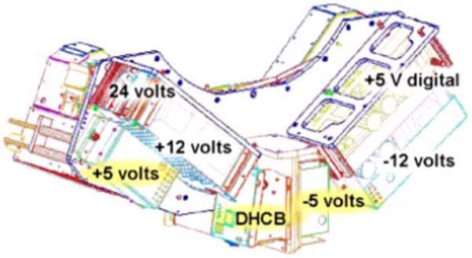
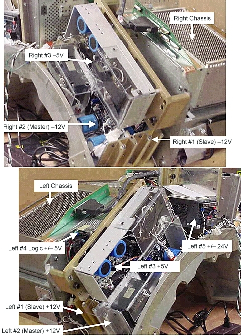

Operating Documentation
Direction 5224328-800, Rev# 5
Dir 5224328-800 LightSpeed 5.X HP60 Limited Access Service
Methods - Adv.
Operating Documentation |
This document shows the location of each of the MDAS power supplies for the MDAS 4/8 slice systems and the MDAS 16 slice systems.
The MDAS is identified as only having slots in the DAS for up to 48 converter cards that can handle up to 8 slices.
The MDAS 16 is identified as having 96 slots for converter cards that can handle up to 16 slices.
Illustration 1: MDAS 4/8 slice systems using Warp 3 detector

Illustration 2: MDAS 16 slice systems using Watson 16 detector
